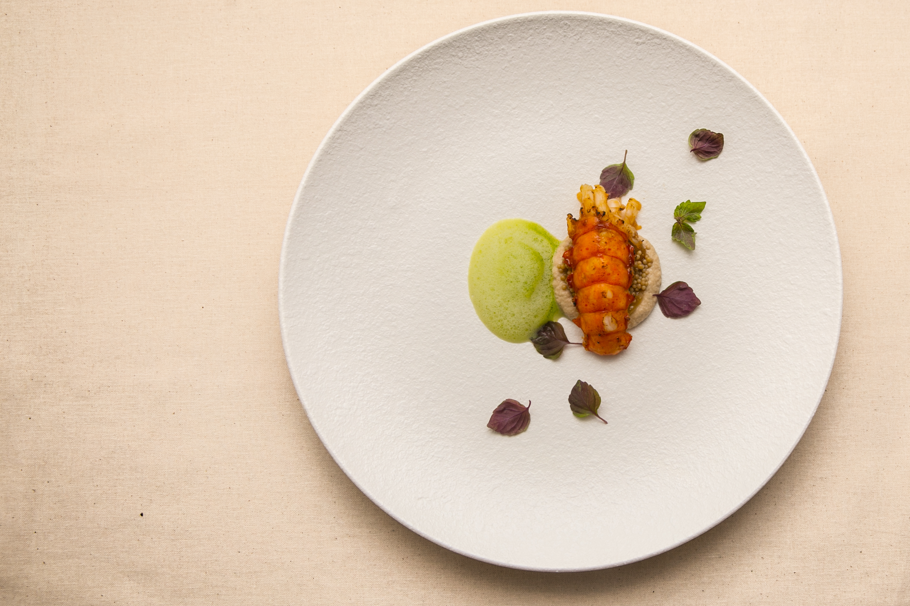
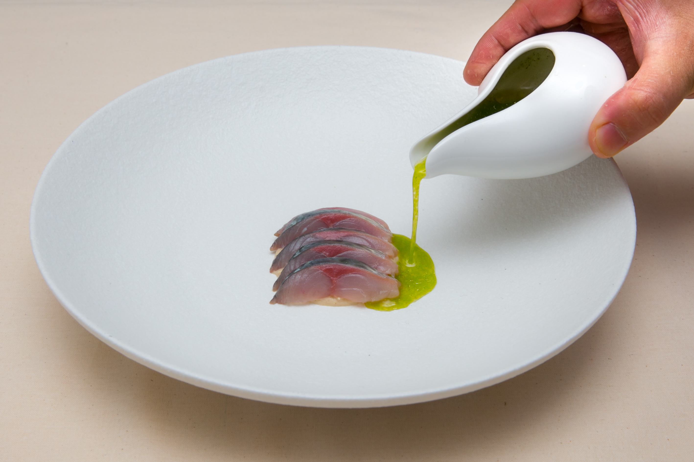

|  |
Blooming France 또는 꽃 피는 불란서
프렌치를 배우던 친구들이 개화를 한다는 의미에 처음에는 영어로 Blooming France 라는 이름을 사용 하려했지만, 보다 한국적인 이미지를 추구하고 싶어서 꽃 피는 불란서 라는 이름을 사용하게 됐습니다.
|
|  |
“새롭지만 친숙한 음식, 전통적인 술과 함께“
처음 팝업 레스토랑 계획은 유학생활동안 함께 지낸 친구들과 졸업 후 의미 있는 시간을 보내 고 싶은 마음에서 시작되었습니다. 여러 국가에서 얻은 경험들과 어린시절을 음식에 녹아내려 가장 새로운 음식을 창조하고 우리의 근본인 한국의 가장 전통적인 술을 곁들여 새롭지만 친
숙한 팝업을 진행하게 됐습니다.
|